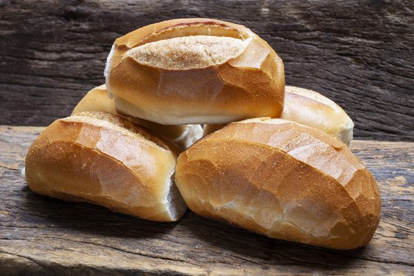
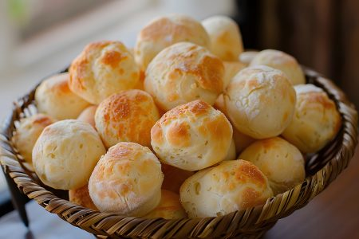
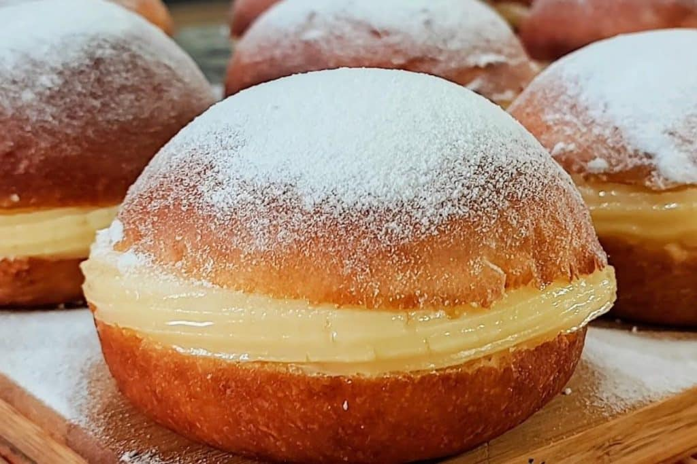
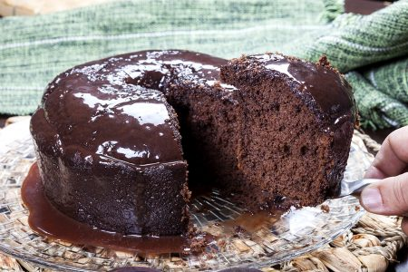
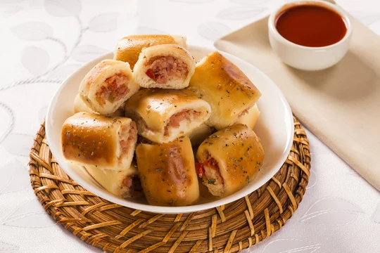
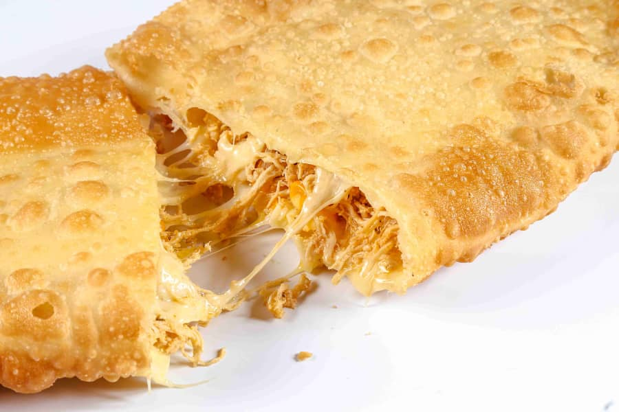
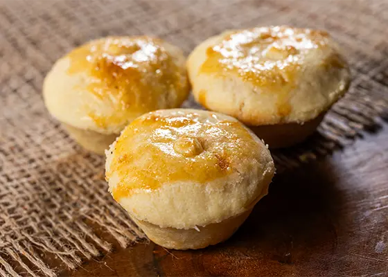

Produtos de Padaria
Pão Francês
Pães fresquinhos, crocantes por fora e macios por dentro.
Prazo para retirada: em até 2 horas.

Pão de Queijo
Pão de queijo assado, com casquinha dourada e interior macio.
Prazo para retirada: até as 18h.

Sonho
Doce macio recheado com creme e coberto com açúcar.
Prazo para retirada: em até 2 horas.

Bolo de Chocolate
Bolo fofinho de chocolate, ideal para acompanhar um café.
Prazo para retirada: até as 18h.

Croissant
Massa folhada e dourada, perfeita para o café da manhã.
Prazo para retirada: em até 2 horas.
Enroladinho de Presunto e Queijo
Salgado assado recheado com presunto e queijo.
Prazo para retirada: até as 18h.

Coxinha
Salgado crocante por fora, com recheio de frango temperado.
Prazo para retirada: em até 2 horas.
Pastel de Frango c/ Queijo
Pastel frito com massa crocante e recheio de queijo derretido.
Prazo para retirada: até as 18h.

Broa de Milho
Broa tradicional de milho, macia e levemente adocicada.
Prazo para retirada: até as 18h.
Pão de Forma
Pão macio, ideal para preparar sanduíches e torradas.
Prazo para retirada: até as 18h.
Empada de Frango
Massa amanteigada com recheio cremoso de frango.
Prazo para retirada: em até 2 horas.

Biscoito de Polvilho
Biscoito leve e crocante, perfeito para acompanhar um café.
Prazo para retirada: até as 18h.